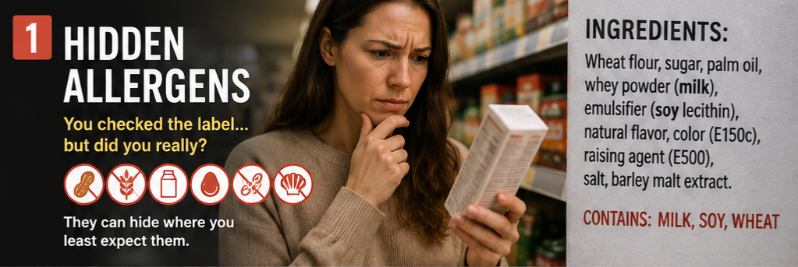
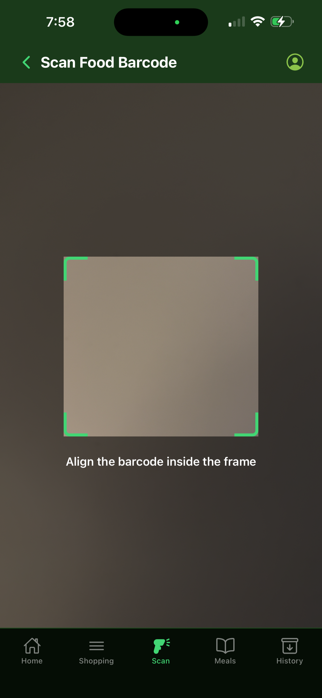

The Hidden Allergen Problem: Why Grocery Shopping Still Isn't Safe for Allergy Families
Picture a Tuesday-evening grocery run. A parent is standing in the cereal aisle, turning a box over to read a paragraph of ingredients printed in eight-point type, cross-referencing it against a mental list of everything their child can't eat — including the half-dozen scientific names that ingredient can hide behind. Multiply that by every item in the cart, every trip, every week, for years. That's not an inconvenience. For allergy families, it's the price of admission just to eat safely.
It's also far more common than most non-allergic shoppers realize.

Why the label alone doesn't solve the problem
Health Canada requires pre-packaged food to list ingredients in decreasing order of proportion, and mandates that its ten priority allergens be called out by common name — "milk" instead of casein, "egg" instead of albumin. That's real progress. But it puts the entire burden of catching it on the person holding the box: reading a full ingredient list, every time, for every product, and staying alert to the fact that formulations change without warning.
Then there's the label warning that looks reassuring but isn't a real guarantee: "may contain" statements. These precautionary notices are entirely voluntary — Health Canada doesn't regulate when or how manufacturers use them. Food Allergy Canada's own guidance is blunt about what that means in practice: some products carrying a "may contain" warning have been found to contain enough of the allergen to trigger a reaction, and some without any warning at all still do. The advice for families isn't to weigh the risk case-by-case — it's to avoid the product outright. Which means even a clean-looking label doesn't earn a parent the right to relax.
The standard advice for allergy families is to read every label three times — once at the store, once unpacking groceries, and once before serving — and to skip bulk bins entirely because of shared-scoop contamination. That's the level of vigilance a single trip to the grocery store currently demands.

How WellValet closes the gap — in the aisle, not at home
WellValet was built around a simple idea: the moment a person is deciding whether to put something in their cart is the moment they need the answer, not twenty minutes later at the kitchen table. Set up your family's allergen profile once — the ingredients each person needs to avoid — and from then on, point your phone at any product's barcode: WellValet checks that product's disclosed ingredients against your saved profile and instantly flags a match, no squinting at eight-point type and no mentally decoding a scientific synonym for milk or egg in the moment.

It's the same label information Health Canada already requires manufacturers to disclose — read against the profile you've told us matters — and handed back to you in seconds, in a form you can act on standing in the aisle. That turns a stressful, error-prone manual process into a single scan. Read more about how the WellValet allergen scanner works.
It's built on the same principles WellValet stands for everywhere else: no health claims beyond what's in the data, on-device processing that keeps your family's information private, and a Canadian-first design that reflects Canadian labelling rules rather than a repurposed U.S. database. For allergy families, that combination means fewer trips slowed down by fine print, and a faster first read on what's in the cart — alongside the label, not instead of it.
Frequently asked questions
What are Canada's priority food allergens?
Health Canada designates ten: peanut, tree nuts, sesame, soy, wheat & triticale, milk, egg, fish, crustaceans & molluscs, and mustard — plus added sulphites. Together they account for roughly 90% of allergic reactions in Canada.
Are "may contain" allergen warnings regulated in Canada?
No. These precautionary statements are voluntary, not regulated by Health Canada, and inconsistent from one manufacturer to the next. Food Allergy Canada's guidance is to avoid a product carrying one rather than try to judge the risk yourself.
How many Canadians have a food allergy?
More than 3 million Canadians self-report at least one food allergy, including over 600,000 children under 18 — enough that an estimated 1-in-2 Canadian households is affected.
How does WellValet help identify allergens while grocery shopping?
Save your family's allergen profile in the app, then scan a product's barcode in-store to instantly check its disclosed ingredients against that profile — a faster first read of the same information Health Canada already requires be on the label.
Does WellValet replace reading the ingredient label?
No. It helps you scan faster, but the ingredient list and allergen statement printed on the package remain the manufacturer's official record and the final source of truth.
Shop with confidence, one scan at a time
Download WellValet, set up your family's allergen profile, and get an instant match check on every product you scan.
Download WellValetWellValet is a tool to help you spot allergens faster against your saved profile — the ingredient list on the package is always the final word.